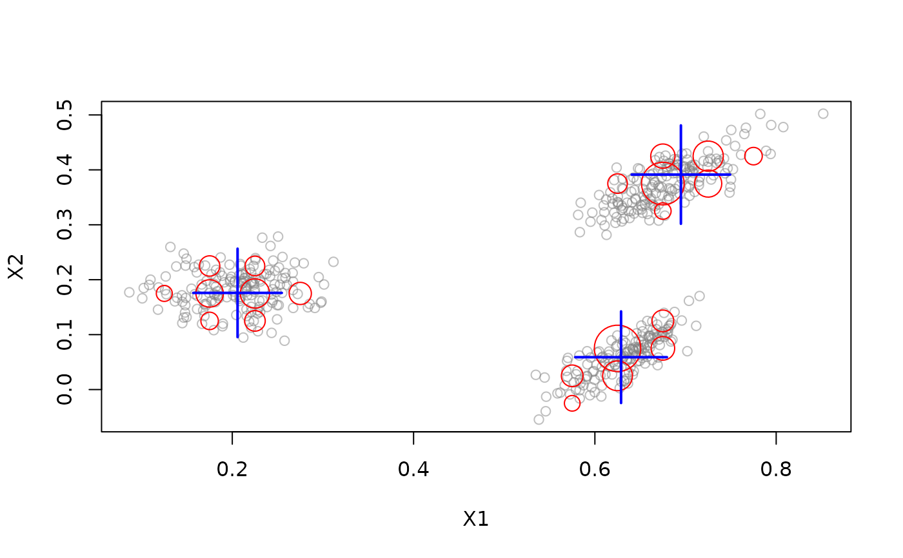
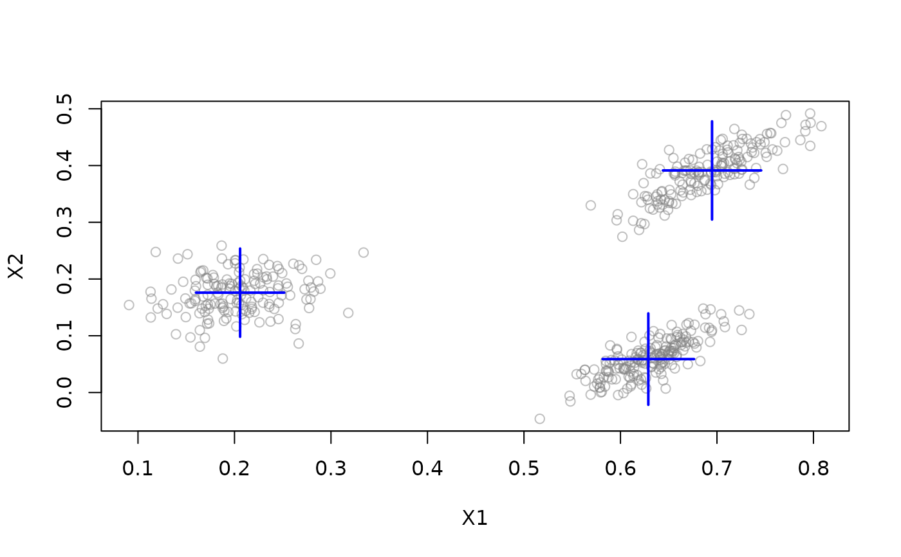
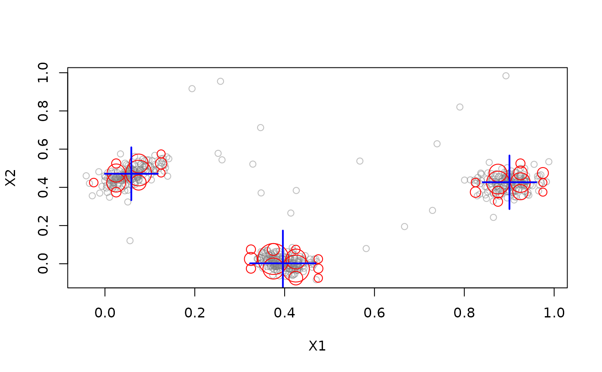

Methods for the generic functions evaluate_static() and evaluate_stream() to calculate evaluation measures for micro or macro-clusters created by a DSC on the
a DSD object.
Usage
# S3 method for class 'DSC'
evaluate_static(
object,
dsd,
measure,
n = 100,
type = c("auto", "micro", "macro"),
assign = "micro",
assignmentMethod = c("auto", "model", "nn"),
excludeNoise = FALSE,
callbacks = list(),
...
)
# S3 method for class 'DSC'
evaluate_stream(
object,
dsd,
measure,
n = 1000,
horizon = 100,
type = c("auto", "micro", "macro"),
assign = "micro",
assignmentMethod = c("auto", "model", "nn"),
excludeNoise = FALSE,
callbacks = NULL,
...,
verbose = FALSE
)Arguments
- object
The DSC object that the evaluation measure is being requested from.
- dsd
The DSD object that holds the initial training data for the DSC.
- measure
Evaluation measure(s) to use. If missing then all available measures are returned.
- n
The number of data points being requested.
- type
Use micro- or macro-clusters for evaluation. Auto used the class of DSC to decide.
- assign
Assign points to micro or macro-clusters?
- assignmentMethod
How are points assigned to clusters for evaluation (see
predict())?- excludeNoise
logical; Should noise points in the data stream be excluded from the calculation?
- callbacks
A named list of functions to calculate custom evaluation measures.
- ...
Unused arguments are ignored.
- horizon
Evaluation is done using horizon many previous points (see detail section).
- verbose
logical; Report progress?
Value
evaluate returns an object of class stream_eval which
is a numeric vector of the values of the requested measures and two
attributes, "type" and "assign", to see at what level the
evaluation was done.
Details
For evaluation, each data point is assigned to its nearest cluster using Euclidean distance to the cluster centers. Then for each cluster the majority class is determined. Based on the majority class several evaluation measures can be computed.
We provide two evaluation methods:
evaluate_static()evaluates the current static clustering using new data without updating the model.evaluate_stream()evaluates the clustering process using prequential error estimation (see Gama, Sebastiao and Rodrigues; 2013). The current model is first applied to the data points in the horizon to calculate the evaluation measures. Then, the cluster model is updated with the points.
Evaluation Measures
Many evaluation measures are available using
code from other packages including cluster::silhouette(),
clue::cl_agreement(), and fpc::cluster.stats().
The following information items are available:
"numPoints"number of points used for evaluation."numMicroClusters"number of micro-clusters"numMacroClusters"number of macro-clusters"numClasses"number of classes
The following noise-related/outlier items are available:
"noisePredicted"Number data points predicted as noise"noiseActual"Number of data points which are actually noise"noisePrecision"Precision of the predicting noise (i.e., number of correctly predicted noise points over the total number of points predicted as noise)"outlierJaccard"- A variant of the Jaccard index used to assess outlier detection accuracy (see Krleza et al (2020)). Outlier Jaccard index is calculated asTP / (TP + FP + UNDETECTED).
The following internal evaluation measures are available:
"SSQ"within cluster sum of squares. Assigns each point to its nearest center from the clustering and calculates the sum of squares. Noise points in the data stream are always ignored."silhouette"average silhouette width. Actual noise points which stay unassigned by the clustering algorithm are ignored; regular points that are unassigned by the clustering algorithm form their own noise cluster) (cluster)"average.between"average distance between clusters (fpc)"average.within"average distance within clusters (fpc)"max.diameter"maximum cluster diameter (fpc)"min.separation"minimum cluster separation (fpc)"ave.within.cluster.ss"a generalization of the within clusters sum of squares (half the sum of the within cluster squared dissimilarities divided by the cluster size) (fpc)"g2"Goodman and Kruskal's Gamma coefficient (fpc)"pearsongamma"correlation between distances and a 0-1-vector where 0 means same cluster, 1 means different clusters (fpc)"dunn"Dunn index (minimum separation / maximum diameter) (fpc)"dunn2"minimum average dissimilarity between two cluster / maximum average within cluster dissimilarity (fpc)"entropy"entropy of the distribution of cluster memberships (fpc)"wb.ratio"average.within/average.between (fpc)
The following external evaluation measures are available:
"precision","recall","F1"F1. A true positive (TP) decision assigns two points in the same true cluster also to the same cluster, a true negative (TN) decision assigns two points from two different true clusters to two different clusters. A false positive (FP) decision assigns two points from the same true cluster to two different clusters. A false negative (FN) decision assigns two points from the same true cluster to different clusters.precision = TP / (TP + FP)recall = TP / (TP + FN)The F1 measure is the harmonic mean of precision and recall.
"purity"Average purity of clusters. The purity of each cluster is the proportion of the points of the majority true group assigned to it (see Cao et al. (2006))."classPurity"(of real clusters; see Wan et al (2009))."fpr"false positive rate."Euclidean"Euclidean dissimilarity of the memberships (see Dimitriadou, Weingessel and Hornik (2002)) (clue)"Manhattan"Manhattan dissimilarity of the memberships (clue)"Rand"Rand index (see Rand (1971)) (clue)"cRand"Adjusted Rand index (see Hubert and Arabie (1985)) (clue)"NMI"Normalized Mutual Information (see Strehl and Ghosh (2002)) (clue)"KP"Katz-Powell index (see Katz and Powell (1953)) (clue)"angle"maximal cosine of the angle between the agreements (clue) -"diag"maximal co-classification rate (clue)"FM"Fowlkes and Mallows's index (see Fowlkes and Mallows (1983)) (clue)"Jaccard"Jaccard index (clue)"PS"Prediction Strength (see Tibshirani and Walter (2005)) (clue) %"corrected.rand"corrected Rand index (fpc)"vi"variation of information (VI) index (fpc)
Many measures are the average over all clusters. For example, purity is the average purity over all clusters.
For DSC_Micro objects, data points are assigned to micro-clusters and
then each micro-cluster is evaluated. For DSC_Macro objects, data
points by default (assign = "micro") also assigned to micro-clusters,
but these assignments are translated to macro-clusters. The evaluation is
here done for macro-clusters. This is important when macro-clustering is
done with algorithms which do not create spherical clusters (e.g,
hierarchical clustering with single-linkage or DBSCAN) and this assignment
to the macro-clusters directly (i.e., their center) does not make sense.
Using type and assign, the user can select how to assign data
points and ad what level (micro or macro) to evaluate.
evaluate_cluster() is used to evaluate an evolving data stream using
the method described by Wan et al. (2009). Of the n data points
horizon many points are clustered and then the evaluation measure is
calculated on the same data points. The idea is to find out if the
clustering algorithm was able to adapt to the changing stream.
Custom Evaluation Measures
The parameter callbacks can be supplied with a named list with
functions with the signature function(actual, predict, points, centers, dsc)
as elements. See the Examples sections for details.
References
Joao Gama, Raquel Sebastiao, Pedro Pereira Rodrigues (2013). On evaluating stream learning algorithms. Machine Learning, March 2013, Volume 90, Issue 3, pp 317-346.
F. Cao, M. Ester, W. Qian, A. Zhou (2006). Density-Based Clustering over an Evolving Data Stream with Noise. Proceeding of the 2006 SIAM Conference on Data Mining, 326-337.
E. Dimitriadou, A. Weingessel and K. Hornik (2002). A combination scheme for fuzzy clustering. International Journal of Pattern Recognition and Artificial Intelligence, 16, 901-912.
E. B. Fowlkes and C. L. Mallows (1983). A method for comparing two hierarchical clusterings. Journal of the American Statistical Association, 78, 553-569.
L. Hubert and P. Arabie (1985). Comparing partitions. Journal of Classification, 2, 193-218.
W. M. Rand (1971). Objective criteria for the evaluation of clustering methods. Journal of the American Statistical Association, 66, 846-850.
L. Katz and J. H. Powell (1953). A proposed index of the conformity of one sociometric measurement to another. Psychometrika, 18, 249-256.
A. Strehl and J. Ghosh (2002). Cluster ensembles - A knowledge reuse framework for combining multiple partitions. Journal of Machine Learning Research, 3, 583-617.
R. Tibshirani and G. Walter (2005). Cluster validation by Prediction Strength. Journal of Computational and Graphical Statistics, 14/3, 511-528.
L Wan, W.K. Ng, X.H. Dang, P.S. Yu and K. Zhang (2009). Density-Based Clustering of Data Streams at Multiple Resolutions, ACM Transactions on Knowledge Discovery from Data, 3(3).
D. Krleža, B. Vrdoljak, and M. Brčić (2020). Statistical Hierarchical Clustering Algorithm for Outlier Detection in Evolving Data Streams, Springer Machine Learning.
See also
cluster::silhouette(), clue::cl_agreement(), and fpc::cluster.stats().
Other DSC:
DSC(),
DSC_Macro(),
DSC_Micro(),
DSC_R(),
DSC_SlidingWindow(),
DSC_Static(),
DSC_TwoStage(),
animate_cluster(),
get_assignment(),
plot.DSC(),
predict,
prune_clusters(),
read_saveDSC,
recluster()
Other evaluation:
animate_cluster(),
evaluate
Examples
# Example 1: Static Evaluation
set.seed(0)
stream <- DSD_Gaussians(k = 3, d = 2)
dstream <- DSC_DStream(gridsize = 0.05, Cm = 1.5)
update(dstream, stream, 500)
plot(dstream, stream)

# Evaluate the micro-clusters in the clustering
# Note: we use here only n = 100 points for evaluation to speed up execution
evaluate_static(dstream, stream, n = 100)
#> Evaluation results for micro-clusters.
#> Points were assigned to micro-clusters.
#>
#> numPoints numMicroClusters numMacroClusters
#> 1.000000e+02 2.100000e+01 3.000000e+00
#> noisePredicted SSQ silhouette
#> 1.500000e+01 5.911126e-02 1.290449e-01
#> average.between average.within max.diameter
#> 3.252955e-01 6.275880e-02 7.526527e-01
#> min.separation ave.within.cluster.ss g2
#> 2.345993e-03 8.255355e-03 7.122126e-01
#> pearsongamma dunn dunn2
#> 2.889115e-01 3.116966e-03 1.045889e-01
#> entropy wb.ratio numClasses
#> 2.756743e+00 1.929286e-01 3.000000e+00
#> noiseActual noisePrecision outlierJaccard
#> 0.000000e+00 0.000000e+00 0.000000e+00
#> precision recall F1
#> 7.976190e-01 1.648216e-01 2.731906e-01
#> purity Euclidean Manhattan
#> 9.766667e-01 1.693376e-01 3.100000e-01
#> Rand cRand NMI
#> 7.119192e-01 1.810519e-01 5.433355e-01
#> KP angle diag
#> 2.993927e-01 3.100000e-01 3.100000e-01
#> FM Jaccard PS
#> 3.625809e-01 1.582054e-01 1.354724e-01
#> vi
#> 1.963845e+00
#> attr(,"type")
#> [1] "micro"
#> attr(,"assign")
#> [1] "micro"
evaluate_static(dstream, stream,
measure = c("numMicro", "numMacro", "purity", "crand", "SSQ"),
n = 100)
#> Evaluation results for micro-clusters.
#> Points were assigned to micro-clusters.
#>
#> numMicroClusters numMacroClusters purity cRand
#> 21.00000000 3.00000000 0.96666667 0.12803980
#> SSQ
#> 0.06918242
#> attr(,"type")
#> [1] "micro"
#> attr(,"assign")
#> [1] "micro"
# DStream also provides macro clusters. Evaluate macro clusters with type = "macro"
# Note that SSQ and cRand increase.
plot(dstream, stream, type = "macro")

evaluate_static(dstream, stream, type = "macro",
measure = c("numMicro", "numMacro", "purity", "crand", "SSQ"),
n = 100)
#> Evaluation results for macro-clusters.
#> Points were assigned to micro-clusters.
#>
#> numMicroClusters numMacroClusters purity cRand
#> 21.0000000 3.0000000 0.9166667 0.8589756
#> SSQ
#> 0.2471728
#> attr(,"type")
#> [1] "macro"
#> attr(,"assign")
#> [1] "micro"
# Points are by default assigned to micro clusters using the method
# specified for the clustering algorithm.
# However, points can also be assigned to the closest macro-cluster using
# assign = "macro".
evaluate_static(dstream, stream, type = "macro", assign = "macro",
measure = c("numMicro", "numMacro", "purity", "crand", "SSQ"),
n = 100)
#> Evaluation results for macro-clusters.
#> Points were assigned to macro-clusters.
#>
#> numMicroClusters numMacroClusters purity cRand
#> 21.0000000 3.0000000 0.8750000 0.7414465
#> SSQ
#> 0.3147806
#> attr(,"type")
#> [1] "macro"
#> attr(,"assign")
#> [1] "macro"
# Example 2: Evaluate with Noise/Outliers
stream <- DSD_Gaussians(k = 3, d = 2, noise = .05)
dstream <- DSC_DStream(gridsize = 0.05, Cm = 1.5)
update(dstream, stream, 500)
# For cRand, noise is its own group, for SSQ, actual noise is always
# excluded.
plot(dstream, stream, 500)

evaluate_static(dstream, stream, n = 100,
measure = c("numPoints", "noisePredicted", "noiseActual",
"noisePrecision", "outlierJaccard", "cRand", "SSQ"))
#> Evaluation results for micro-clusters.
#> Points were assigned to micro-clusters.
#>
#> numPoints noisePredicted noiseActual noisePrecision outlierJaccard
#> 100.00000000 9.00000000 5.00000000 0.55555556 0.55555556
#> cRand SSQ
#> 0.21014360 0.04074987
#> attr(,"type")
#> [1] "micro"
#> attr(,"assign")
#> [1] "micro"
# Note that if noise is excluded, the number of used points is reduced.
evaluate_static(dstream, stream, n = 100,
measure = c("numPoints", "noisePredicted", "noiseActual",
"noisePrecision", "outlierJaccard", "cRand", "SSQ"), excludeNoise = TRUE)
#> Evaluation results for micro-clusters.
#> Points were assigned to micro-clusters.
#>
#> numPoints noisePredicted noiseActual noisePrecision outlierJaccard
#> 92.0000000 8.0000000 0.0000000 0.0000000 0.0000000
#> cRand SSQ
#> 0.1421843 0.0440498
#> attr(,"type")
#> [1] "micro"
#> attr(,"assign")
#> [1] "micro"
# Example 3: Evaluate an evolving data stream
stream <- DSD_Benchmark(1)
dstream <- DSC_DStream(gridsize = 0.05, lambda = 0.1)
evaluate_stream(dstream, stream, type = "macro", assign = "micro",
measure = c("numMicro", "numMacro", "purity", "cRand"),
n = 600, horizon = 100)
#> points numMicro numMacro purity cRand
#> 1 0 0 0 0.5200000 0.0000000
#> 2 100 9 6 0.8974359 0.9127801
#> 3 200 6 5 0.8750000 0.4829038
#> 4 300 12 6 1.0000000 1.0000000
#> 5 400 12 5 0.9722222 0.9737499
#> 6 500 8 6 0.8412698 0.7703008
if (interactive()){
# animate the clustering process
reset_stream(stream)
dstream <- DSC_DStream(gridsize = 0.05, lambda = 0.1)
animate_cluster(dstream, stream, horizon = 100, n = 5000,
measure = "cRand", type = "macro", assign = "micro",
plot.args = list(type = "both", xlim = c(0,1), ylim = c(0,1)))
}
# Example 4: Add a custom measure as a callback
callbacks <- list(
noisePercentage = function(actual, predict, points, centers, dsc) {
sum(actual == 0L) / length(actual)
},
noiseFN = function(actual, predict, points, centers, dsc) {
sum(actual == 0L & predict != 0L)
},
noiseFP = function(actual, predict, points, centers, dsc) {
sum(actual != 0L & predict == 0L)
}
)
stream <- DSD_Gaussians(k = 3, d = 2, noise = .2)
dstream <- DSC_DStream(gridsize = 0.05, Cm = 1.5)
update(dstream, stream, 500)
evaluate_static(dstream, stream,
measure = c("numPoints", "noiseActual", "noisePredicted",
"noisePercentage", "noiseFN", "noiseFP"),
callbacks = callbacks, n = 100)
#> Evaluation results for micro-clusters.
#> Points were assigned to micro-clusters.
#>
#> numPoints noiseActual noisePredicted noisePercentage noiseFN
#> 100.0 20.0 25.0 0.2 0.0
#> noiseFP
#> 5.0
#> attr(,"type")
#> [1] "micro"
#> attr(,"assign")
#> [1] "micro"
evaluate_static(dstream, stream, callbacks = callbacks)
#> Evaluation results for micro-clusters.
#> Points were assigned to micro-clusters.
#>
#> numPoints numMicroClusters numMacroClusters
#> 1.000000e+02 2.700000e+01 3.000000e+00
#> noisePredicted SSQ silhouette
#> 3.000000e+01 4.213453e-02 1.534248e-01
#> average.between average.within max.diameter
#> 4.729914e-01 1.912991e-01 1.119525e+00
#> min.separation ave.within.cluster.ss g2
#> 5.233743e-03 5.646056e-02 2.586310e-02
#> pearsongamma dunn dunn2
#> 4.366516e-03 4.674967e-03 4.204701e-02
#> entropy wb.ratio numClasses
#> 2.724926e+00 4.044452e-01 4.000000e+00
#> noiseActual noisePrecision outlierJaccard
#> 2.200000e+01 7.333333e-01 7.333333e-01
#> precision recall F1
#> 6.296992e-01 2.748154e-01 3.826385e-01
#> purity Euclidean Manhattan
#> 9.888889e-01 2.189750e-01 3.900000e-01
#> Rand cRand NMI
#> 7.816162e-01 2.739980e-01 5.768890e-01
#> KP angle diag
#> 3.400390e-01 3.900000e-01 3.900000e-01
#> FM Jaccard PS
#> 4.159941e-01 2.365819e-01 8.262108e-02
#> vi noisePercentage noiseFN
#> 1.867307e+00 2.200000e-01 0.000000e+00
#> noiseFP
#> 8.000000e+00
#> attr(,"type")
#> [1] "micro"
#> attr(,"assign")
#> [1] "micro"